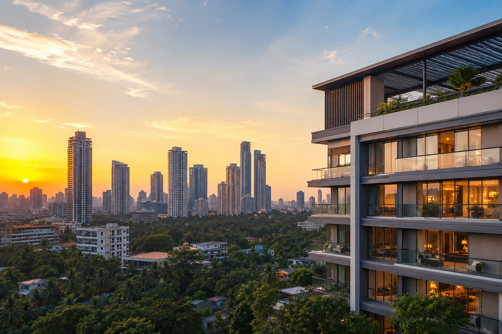

Real Estate Development in Mumbai: What Homebuyers and Investors Need to Know in 2026

Real estate development in Mumbai is the process of planning, approving, constructing, and delivering residential, commercial, or mixed-use projects within one of India's most land-constrained and heavily regulated cities.
It covers everything from acquiring a plot or redeveloping an old housing society to securing approvals, managing construction, and handing over RERA-compliant homes to buyers. In this guide, we'll walk through how the process actually works, the regulations that protect buyers, the infrastructure changes reshaping the city's growth corridors, and a practical framework for choosing a developer you can trust.
If you've ever wondered why a project in Mumbai takes years longer than one in a smaller city, or why redevelopment dominates so much of the conversation here, this article will answer that in plain terms.
What Does Real Estate Development in Mumbai
Actually Involve?
At its core, real estate development in Mumbai means converting land, or an existing structure, into a functional, liveable, and legally compliant asset. That sounds simple until you factor in Mumbai's geography. The city is an island city with the Arabian Sea on three sides, which means land supply has been fixed for decades while demand keeps climbing. This single constraint shapes almost every decision a developer makes, from building height to unit configuration to price.
Unlike a plotted development in a growing tier-2 city, building here usually means working within an already dense urban fabric. Developers negotiate with existing societies, navigate multiple municipal departments, work around heritage precincts, and factor in monsoon-driven construction delays that few other Indian cities deal with at this scale.
This is also why redevelopment has become such a dominant theme in the city. Much of Mumbai's housing stock was built between the 1960s and 1990s and is now structurally due for renewal. Instead of building only on vacant land, a large share of active development activity here involves rebuilding on the footprint of existing societies, chawls, or slum clusters, often with added density permitted under redevelopment-specific rules.
At Tatvm Group, this is where a significant part of our own work sits. Our team has spent years refining the redevelopment process for societies that want more space, better amenities, and a legally airtight transition, and you can see how that philosophy plays out across our redevelopment projects in Mumbai.
Understanding this distinction, greenfield versus redevelopment, is the first step to making sense of anything else in this article, because the rules, timelines, and risks differ significantly between the two.
Why Mumbai's Real Estate Market Behaves
Differently From Every Other Indian City
Compare Mumbai to Pune, Bengaluru, or the National Capital Region, and one thing stands out immediately: Mumbai almost never grows outward in the way other cities do. There simply isn't unused land at scale within city limits. Growth instead happens in three ways: vertically (taller towers on smaller footprints), through redevelopment (rebuilding on already-used land), and outward into the Mumbai Metropolitan Region, meaning Thane, Navi Mumbai, and the areas along new metro corridors.
This creates a market with far higher entry costs per square foot in the island city, but also far more resilience. Central and South Mumbai locations rarely see the kind of price correction seen in oversupplied peripheral markets elsewhere in the country, because the supply pipeline simply cannot expand the way it can in an open plotted city. For a small business owner or financial manager evaluating a commercial or residential purchase, this matters: Mumbai's constrained supply is a structural feature, not a temporary market condition.
The second big difference is regulatory density. A single project can require sign-offs from the Municipal Corporation of Greater Mumbai, the state's redevelopment or slum rehabilitation authority (where applicable), fire and environmental departments, and the Maharashtra Real Estate Regulatory Authority, before a single unit can be legally sold. We'll unpack this regulatory layer in more detail later in this article, since it's one of the most misunderstood parts of the buying process.
Finally, Mumbai's real estate development story is inseparable from its infrastructure story. Metro expansion, coastal roads, and the under-construction Navi Mumbai International Airport aren't side notes, they are actively redrawing which suburbs are considered "prime" every few years. We cover this in the growth corridors section further down, and if you want a deeper look at how these shifts played out this year, our team recently published a detailed breakdown of Mumbai's real estate landscape worth reading alongside this guide.
The Main Types of Real Estate Development in Mumbai
Not all development in the city looks the same, and the type of project shapes everything from approval timelines to buyer risk. Broadly, real estate development in Mumbai falls into three categories.
Greenfield Residential Development
This is development on land that isn't currently occupied by an existing structure, typically in the suburbs or the Mumbai Metropolitan Region where some undeveloped or underutilised parcels still exist. These projects tend to move faster through approvals since there's no existing society or tenant negotiation involved, but land cost and availability are the biggest constraints.
Commercial and Mixed-Use Development
Office towers, retail podiums, and increasingly, mixed-use developments that combine residential towers with retail and office space at the base. Bandra Kurla Complex is the clearest example of how Mumbai has planned entire commercial districts from scratch, and mixed-use is now a growing preference among developers because it diversifies risk across buyer segments.
Redevelopment and Slum Rehabilitation (SRA) Projects
This is arguably the most Mumbai-specific category. Redevelopment involves rebuilding an existing cooperative housing society, often with additional floor space allowed as an incentive, in exchange for giving existing residents larger, modern homes at no cost. Slum Rehabilitation Authority (SRA) projects follow a similar logic at a larger scale, rehabilitating slum dwellers into formal housing while allowing developers to monetise the remaining constructed area. Both categories require deep local expertise, patience, and a strong working relationship with residents, which is why experience matters more here than in almost any other project type. You can see the range of these formats across our own projects page.
The Real Estate Development Process in Mumbai, Step by Step
Buyers and small investors often assume development is just "construction," but by the time a tower is ready for possession, a developer has usually managed five distinct phases.
Step 1: Land or Society Identification
For greenfield projects, this means acquiring a clear-titled plot. For redevelopment, it means securing consent from the required majority of society members, verifying the society's legal standing, and negotiating terms that work for both residents and the developer.
Step 2: Feasibility, FSI, and Approvals
Once land or a society is identified, the developer calculates Floor Space Index (FSI) and any applicable Transfer of Development Rights (TDR) to determine how much can legally be built. This stage involves architectural planning, environmental clearances where applicable, and sign-offs from the Municipal Corporation of Greater Mumbai and other relevant authorities.
Step 3: MahaRERA Registration
Any project larger than 500 square metres or with more than eight apartments must be registered with the Maharashtra Real Estate Regulatory Authority before it can be advertised or sold. Developers must also deposit at least 70% of funds collected from buyers into a dedicated escrow account used only for that project's construction and land costs. This single rule has done more to protect Mumbai buyers from stalled projects than almost any other reform in the last decade.
Step 4: Construction, Quality Checks, and Timelines
This is the longest phase and the one most affected by Mumbai's monsoon season, labour availability, and material logistics in a dense city. Reputable developers build in realistic buffers here rather than promising unrealistic completion dates.
Step 5: Handover and Post-Possession Support
The final phase includes occupancy certificates, society formation (for redevelopment projects, this often means transitioning existing residents back into their new homes), and ongoing support for maintenance and documentation. A developer's real reputation is often built or broken at this last, least glamorous stage.
If you're weighing a purchase or a redevelopment proposal for your own society, our team is happy to walk you through where a specific project stands in this process. Feel free to get in touch with our team for a straightforward conversation.
The Regulatory Backbone: MahaRERA, FSI,
and Why Compliance Matters
No conversation about real estate development in Mumbai is complete without the regulatory framework that governs it, because this is precisely where most buyer risk gets created or eliminated.
The Real Estate (Regulation and Development) Act, 2016, is implemented in the state through the Maharashtra Real Estate Regulatory Authority (MahaRERA). As noted on the authority's own portal, any promoter intending to advertise, market, or sell apartments in a project exceeding 500 square metres or eight units must register that project with MahaRERA before any sale can legally proceed, and must maintain a separate escrow account for each project. This gives any buyer a simple, free way to verify a project's registration status, promoter details, and approvals before signing anything.
Beyond RERA, Floor Space Index (FSI) rules, set and periodically revised by the state government and the Municipal Corporation of Greater Mumbai, determine how much built-up area is legally permitted on a given plot. Redevelopment and slum rehabilitation projects often receive additional FSI or Transfer of Development Rights (TDR) as an incentive to rebuild ageing or informal housing stock, which is part of why redevelopment has become such an active segment of the market.
For a small business owner or financial manager treating property as an investment rather than just a home, the practical takeaway is this: always verify MahaRERA registration, always confirm the approved FSI and layout match what's being marketed, and never rely solely on brochure claims. A developer with nothing to hide will hand over this documentation without hesitation. This is a standard we hold ourselves to, and you can learn more about our approach and track record on our about us page.
Growth Corridors Shaping Real Estate
Development in Mumbai in 2026
Mumbai's real estate map is being redrawn by infrastructure, not just demand. Three developments matter most right now.
Metro expansion. The Mumbai Metropolitan Region Development Authority (MMRDA) has multiple metro corridors under active construction and phased launch across the city, improving connectivity between the western and eastern suburbs and reducing dependence on the already-strained suburban rail network. As these lines open, station-adjacent neighbourhoods typically see faster appreciation and stronger rental demand, since commute time, not just distance, is what actually drives buyer decisions in Mumbai.
Navi Mumbai International Airport and the "Third Mumbai" corridor. As this airport nears completion, areas like Panvel, Ulwe, and the broader Navi Mumbai belt are shifting from being considered peripheral to being planned as a genuine extension of the city's economic core. This is one of the more significant medium-term shifts for both residential and commercial development in the region.
Coastal and connectivity projects. Ongoing coastal road and tunnel projects within the island city are gradually easing north-south travel times, which has knock-on effects for how South and Central Mumbai locations are valued relative to the suburbs.
None of this means every peripheral location is automatically a good investment. Infrastructure announcements and infrastructure delivery are two different things, and timelines in large civic projects can shift. The sound approach is to treat confirmed, under-construction infrastructure as a genuine tailwind, and to treat announced-but-not-started projects with healthy caution. Our recent analysis of Mumbai's real estate landscape goes deeper into how these specific corridors are performing.
How to Choose the Right Real Estate
Developer in Mumbai
With dozens of names competing for attention, from decades-old legacy players to newer, more design-forward entrants, the decision often comes down to a few concrete checks rather than brand familiarity alone.
- Check MahaRERA registration first, every time. This single step eliminates the majority of avoidable risk.
- Ask about the developer's redevelopment or delivery track record, not just their marketing language. Established groups with long operating histories, whether that's a decades-old name like Sugee Group with its redevelopment-heavy portfolio, or a newer, more agile developer, should be able to show you completed projects, not just renderings.
- Understand who is actually leading the company. A developer's leadership experience often predicts how a project handles the inevitable friction of Mumbai's approval process. Our own leadership team, for instance, brings almost two decades of hands-on Mumbai real estate experience across luxury housing, redevelopment, and slum rehabilitation, which shapes how we plan and deliver every project.
- Evaluate design philosophy, not just square footage. Space, natural light, ventilation, and functional layouts matter more to daily life than a headline carpet area figure. This is a principle we've written about in detail in our piece on thoughtful home design in redevelopment projects.
- Ask what happens after possession. Maintenance support, documentation handover, and society formation assistance separate developers who disappear after the sale from those who stay accountable.
If you're evaluating a specific project or considering redevelopment for your own society, we'd encourage you to compare notes directly with our team rather than relying on brochures alone.
Common Challenges in Mumbai Real Estate Development
(and How Serious Developers Solve Them)
Every developer working in this city runs into the same set of structural challenges. What separates a reliable partner from a risky one is how these are handled.
Land title and society consent complexity. Redevelopment requires securing consent from a legally defined majority of society members, and disputes here can stall a project for years. Experienced developers invest heavily upfront in legal due diligence and transparent, ongoing communication with residents, rather than rushing consent.
Approval timelines across multiple authorities. With sign-offs required from municipal, environmental, and regulatory bodies, delays are common. Developers who maintain dedicated liaison teams and realistic project timelines, instead of overpromising delivery dates, tend to avoid the worst of these bottlenecks.
Monsoon-driven construction delays. Mumbai's construction season is effectively shorter than in most Indian cities once monsoon months are excluded. Building in contingency time from day one, rather than treating the monsoon as an unexpected disruption, is a mark of a mature developer.
Affordability pressure versus rising input costs. As construction material and labour costs rise faster than average wage growth in many segments, developers face real pressure to maintain both quality and pricing discipline. This is where financial stability and a long-term view, rather than short-term margin chasing, protects both the developer and the buyer.
At Tatvm Group, these aren't abstract challenges, they're the daily reality of working in this city, and our approach is built specifically around solving for them with transparency and realistic planning rather than overpromising.
Frequently Asked Questions
1. Who are the top developers in Mumbai?
Mumbai's developer landscape includes a mix of large, long-established groups and newer, more specialised players. Well-known names span decades-old redevelopment specialists such as Sugee Group, large diversified developers with citywide residential and commercial portfolios, and emerging, design-focused developers like Tatvm Group that are building a reputation around sustainable, mid-to-premium residential and redevelopment projects. Rather than ranking by size alone, it's worth evaluating any shortlist against MahaRERA registration, delivery track record, and leadership experience, since these factors matter more to project outcomes than brand size alone.
2. What is the difference between real estate development and redevelopment in Mumbai?
Development typically refers to building on vacant or newly acquired land, while redevelopment means rebuilding an existing structure, usually an older cooperative housing society, into a modern building, often with additional floor space granted as an incentive under state redevelopment rules.
3. Is it safe to invest in an under-construction project in Mumbai?
It can be, provided the project is registered with MahaRERA, the developer has a verifiable delivery history, and you personally review the escrow account and approval documentation rather than relying solely on sales representatives.
Conclusion
Real estate development in Mumbai is shaped by constraints most other Indian cities simply don't face: fixed land supply, dense multi-authority approvals, an ageing housing stock that demands redevelopment at scale, and infrastructure projects that quietly redraw the value map every few years.
Understanding the process, from society consent and FSI calculations through MahaRERA registration to final handover, gives buyers and investors a real advantage over relying on brand names alone.
Whether you're evaluating a new residential purchase, considering redevelopment for your own society, or exploring commercial opportunities, the fundamentals stay the same: verify compliance, study the developer's actual track record, and think in terms of long-term liveability rather than headline numbers.
At Tatvm Group, this is the standard we build to, project after project. If you'd like to discuss a residential purchase, a redevelopment proposal for your society, or simply want an honest second opinion on a project you're considering, get in touch with our team and we'll walk you through it in plain terms.